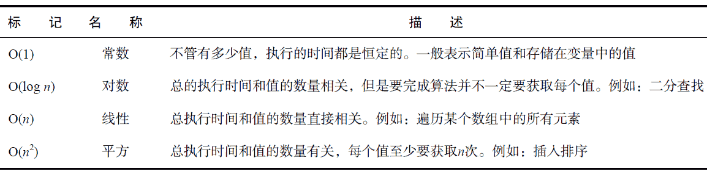

自从JavaScript 诞生以来，用这门语言编写网页的开发人员有了极大的增长。与此同时，JavaScript代码的执行效率也越来越受到关注。因为JavaScript 最初是一个解释型语言，执行速度要比编译型语言慢得多。Chrome 是第一款内置优化引擎，将JavaScript 编译成本地代码的浏览器。此后，主流浏览器纷纷效仿，陆续实现了JavaScript 的编译执行。
即使到了编译执行JavaScript 的新阶段，仍然会存在低效率的代码。不过，还是有一些方式可以改进代码的整体性能的。function updateUI() {
var imgs = document.getElementsByTagName("img");
for (var i = 0,
len = imgs.length; i < len; i++) {
imgs[i].title = document.title + " image " + i;
}
var msg = document.getElementById("msg");
msg.innerHTML = "Update complete.";
}
该函数可能看上去完全正常，但是它包含了三个对于全局document 对象的引用。如果在页面上有多个图片，那么for 循环中的document 引用就会被执行多次甚至上百次，每次都会要进行作用域链查找。通过创建一个指向document 对象的局部变量，就可以通过限制一次全局查找来改进这个函数的性能：function updateUI() {
var doc = document;
var imgs = doc.getElementsByTagName("img");
for (var i = 0,
len = imgs.length; i < len; i++) {
imgs[i].title = doc.title + " image " + i;
}
var msg = doc.getElementById("msg");
msg.innerHTML = "Update complete.";
}
这里，首先将document 对象存在本地的doc 变量中；然后在余下的代码中替换原来的document。
与原来的的版本相比，现在的函数只有一次全局查找，肯定更快。将在一个函数中会用到多次的全局对象存储为局部变量总是没错的。在性能非常重要的地方必须避免使用with 语句。和函数类似，with 语句会创建自己的作用域，因此会增加其中执行的代码的作用域链的长度。由于额外的作用域链查找，在with 语句中执行的代码肯定会比外面执行的代码要慢。
必须使用with 语句的情况很少，因为它主要用于消除额外的字符。在大多数情况下，可以用局部变量完成相同的事情而不引入新的作用域。下面是一个例子：function updateBody() {
with(document.body) {
alert(tagName);
innerHTML = "Hello world!";
}
}
这段代码中的with 语句让document.body 变得更容易使用。其实可以使用局部变量达到相同的效果，如下所示：function updateBody() {
var body = document.body alert(body.tagName);
body.innerHTML = "Hello world!";
}
虽然代码稍微长了点，但是阅读起来比with 语句版本更好，它确保让你知道tagName 和innerHTML 是属于哪个对象的。同时，这段代码通过将document.body 存储在局部变量中省去了额外的全局查找。在计算机科学中，算法的复杂度是使用O 符号来表示的。最简单、最快捷的算法是常数值即O(1)。之后，算法变得越来越复杂并花更长时间执行。下面的表格列出了JavaScript 中常见的算法类型。
var value = 5; var sum = 10 + value; alert(sum);
该代码进行了四次常量值查找：数字5，变量value，数字10 和变量sum。这段代码的整体复杂度被认为是O(1)。
在JavaScript 中访问数组元素也是一个O(1)操作，和简单的变量查找效率一样。所以以下代码和前面的例子效率一样：var values = [5, 10]; var sum = values[0] + values[1]; alert(sum);使用变量和数组要比访问对象上的属性更有效率，后者是一个O(n)操作。对象上的任何属性查找都要比访问变量或者数组花费更长时间，因为必须在原型链中对拥有该名称的属性进行一次搜索。简而言之，属性查找越多，执行时间就越长。请看以下内容：
var values = { first: 5, second: 10};
var sum = values.first + values.second;
alert(sum);
这段代码使用两次属性查找来计算sum 的值。进行一两次属性查找并不会导致显著的性能问题，但是进行成百上千次则肯定会减慢执行速度。注意获取单个值的多重属性查找。例如，请看以下代码：var query = window.location.href.substring(window.location.href.indexOf("?"));
在这段代码中，有6 次属性查找：window.location.href.substring()有3 次，window.location.href.indexOf()又有3 次。只要数一数代码中的点的数量，就可以确定属性查找的次数了。这段代码由于两次用到了window.location.href，同样的查找进行了两次，因此效率特别不好。一旦多次用到对象属性，应该将其存储在局部变量中。第一次访问该值会是O(n)，然而后续的访问都会是O(1)，就会节省很多。例如，之前的代码可以如下重写：var url = window.location.href;
var query = url.substring(url.indexOf("?"));
这个版本的代码只有4 次属性查找，相对于原始版本节省了33%。在更大的脚本中进行这种优化，倾向于获得更多改进。
一般来讲，只要能减少算法的复杂度，就要尽可能减少。尽可能多地使用局部变量将属性查找替换为值查找。进一步讲，如果即可以用数字化的数组位置进行访问，也可以使用命名属性（诸如NodeList对象），那么使用数字位置。for (var i=0; i < values.length; i++){
process(values[i]);
}
这段代码中变量i 从0 递增到values 数组中的元素总数。假设值的处理顺序无关紧要，那么循环可以改为i 减值，如下所示：for (var i=values.length -1; i >= 0; i--){
process(values[i]);
}
这里，变量i 每次循环之后都会减1。在这个过程中，将终止条件从value.length 的O(n)调用简化成了0 的O(1)调用。由于循环体只有一个语句，无法进一步优化。不过循环还能改成后测试循环，如下：var i = values.length - 1;
if (i > -1) {
do {
process(values[i]);
} while (-- i >= 0 );
}
此处主要的优化是将终止条件和自减操作符组合成了单个语句。这时，任何进一步的优化只能在process()函数中进行了，因为循环部分已经优化完全了。
记住使用“后测试”循环时必须确保要处理的值至少有一个。空数组会导致多余的一次循环而“前测试”循环则可以避免。//消除循环 process(values[0]); process(values[1]); process(values[2]);
这个例子假设values 数组里面只有3 个元素，直接对每个元素调用process()。这样展开循环可以消除建立循环和处理终止条件的额外开销，使代码运行得更快。
如果循环中的迭代次数不能事先确定，那可以考虑使用一种叫做Duff 装置的技术。这个技术是以其创建者Tom Duff 命名的，他最早在C 语言中使用这项技术。正是Jeff Greenberg 用JavaScript 实现了Duff 装置。Duff 装置的基本概念是通过计算迭代的次数是否为8 的倍数将一个循环展开为一系列语句。请看以下代码：//credit: Jeff Greenberg for JS implementation of Duff’s Device
//假设 values.length > 0
var iterations = Math.ceil(values.length / 8);
var startAt = values.length % 8;
var i = 0;
do {
switch (startAt) {
case 0:
process(values[i++]);
case 7:
process(values[i++]);
case 6:
process(values[i++]);
case 5:
process(values[i++]);
case 4:
process(values[i++]);
case 3:
process(values[i++]);
case 2:
process(values[i++]);
case 1:
process(values[i++]);
}
startAt = 0;
} while (-- iterations > 0 );
Duff 装置的实现是通过将values 数组中元素个数除以8 来计算出循环需要进行多少次迭代的。然后使用取整的上限函数确保结果是整数。如果完全根据除8 来进行迭代，可能会有一些不能被处理到的元素，这个数量保存在startAt 变量中。首次执行该循环时，会检查StartAt 变量看有需要多少额外调用。例如，如果数组中有10 个值，startAt 则等于2，那么最开始的时候process()则只会被调用2 次。在接下来的循环中，startAt 被重置为0，这样之后的每次循环都会调用8 次process()。展开循环可以提升大数据集的处理速度。
由Andrew B. King 所著的Speed Up Your Site（New Riders，2003）提出了一个更快的Duff 装置技术，将do-while 循环分成2 个单独的循环。以下是例子：//credit: Speed Up Your Site (New Riders, 2003)
var iterations = Math.floor(values.length / 8);
var leftover = values.length % 8;
var i = 0;
if (leftover > 0) {
do {
process(values[i++]);
} while (-- leftover > 0 );
}
do {
process(values[i++]);
process(values[i++]);
process(values[i++]);
process(values[i++]);
process(values[i++]);
process(values[i++]);
process(values[i++]);
process(values[i++]);
} while (-- iterations > 0 );
在这个实现中，剩余的计算部分不会在实际循环中处理，而是在一个初始化循环中进行除以8 的操作。当处理掉了额外的元素，继续执行每次调用8 次process()的主循环。这个方法几乎比原始的Duff装置实现快上40%。针对大数据集使用展开循环可以节省很多时间，但对于小数据集，额外的开销则可能得不偿失。它//某些代码求值——避免!!
eval("alert('Hello world!')");
//创建新函数——避免!!
var sayHi = new Function("alert('Hello world!')");
//设置超时——避免!!
setTimeout("alert('Hello world!')", 500);
在以上这些例子中，都要解析包含了JavaScript 代码的字符串。这个操作是不能在初始的解析过程中完成的，因为代码是包含在字符串中的，也就是说在JavaScript 代码运行的同时必须新启动一个解析器来解析新的代码。实例化一个新的解析器有不容忽视的开销，所以这种代码要比直接解析慢得多。//已修正
alert('Hello world!');
//创建新函数——已修正
var sayHi = function() {
alert('Hello world!');
};
//设置一个超时——已修正
setTimeout(function() {
alert('Hello world!');
},
500);
如果要提高代码性能，尽可能避免出现需要按照JavaScript 解释的字符串。//4 个语句——很浪费 var count = 5; var color = "blue"; var values = [1,2,3]; var now = new Date();在强类型语言中，不同的数据类型的变量必须在不同的语句中声明。然而，在JavaScript 中所有的变量都可以使用单个var 语句来声明。前面的代码可以如下重写：
//一个语句 var count = 5, color = "blue", values = [1,2,3], now = new Date();此处，变量声明只用了一个var 语句，之间由逗号隔开。在大多数情况下这种优化都非常容易做，并且要比单个变量分别声明快很多。
var name = values[i]; i++;
前面这2 句语句各只有一个目的：第一个从values 数组中获取值，然后存储在 name 中；第二个给变量i 增加1。这两句可以通过迭代值插入第一个语句组合成一个语句，如下所示：
var name = values[i++];
这一个语句可以完成和前面两个语句一样的事情。因为自增操作符是后缀操作符，i 的值只有在语句其他部分结束之后才会增加。一旦出现类似情况，都要尝试将迭代值插入到最后使用它的语句中去。
//用4 个语句创建和初始化数组——浪费
var values = new Array();
values[0] = 123;
values[1] = 456;
values[2] = 789;
//用4 个语句创建和初始化对象——浪费
var person = new Object();
person.name = "Nicholas";
person.age = 29;
person.sayName = function() {
alert(this.name);
};
这段代码中，只创建和初始化了一个数组和一个对象。各用了4 个语句：一个调用构造函数，其他3 个分配数据。其实可以很容易地转换成使用字面量的形式，如下所示：//只用一条语句创建和初始化数组
var values = [123, 456, 789];
//只用一条语句创建和初始化对象
var person = {
name: "Nicholas",
age: 29,
sayName: function() {
alert(this.name);
}
};
重写后的代码只包含两条语句，一条创建和初始化数组，另一条创建和初始化对象。之前用了八条语句的东西现在只用了两条，减少了75%的语句量。在包含成千上万行JavaScript 的代码库中，这些优化的价值更大。var list = document.getElementById("myList"),
item,
i;
for (i = 0; i < 10; i++) {
item = document.createElement("li");
list.appendChild(item);
item.appendChild(document.createTextNode("Item " + i));
}
这段代码为列表添加了10 个项目。添加每个项目时，都有2 个现场更新：一个添加<li>元素，另一个给它添加文本节点。这样添加10 个项目，这个操作总共要完成20 个现场更新。var list = document.getElementById("myList"),
fragment = document.createDocumentFragment(),
item,
i;
for (i = 0; i < 10; i++) {
item = document.createElement("li");
fragment.appendChild(item);
item.appendChild(document.createTextNode("Item " + i));
}
list.appendChild(fragment);
在这个例子中只有一次现场更新，它发生在所有项目都创建好之后。文档片段用作一个临时的占位符，放置新创建的项目。然后使用appendChild()将所有项目添加到列表中。记住，当给appendChild()传入文档片段时，只有片段中的子节点被添加到目标，片段本身不会被添加的。
一旦需要更新DOM，请考虑使用文档片段来构建DOM结构，然后再将其添加到现存的文档中。var list = document.getElementById("myList"),
html = "",
i;
for (i = 0; i < 10; i++) {
html += "<li>Item " + i + "</li>";
}
list.innerHTML = html;
这段代码构建了一个HTML 字符串，然后将其指定到list.innerHTML，便创建了需要的DOM 结构。虽然字符串连接上总是有点性能损失，但这种方式还是要比进行多个DOM 操作更快。
使用innerHTML 的关键在于（和其他DOM 操作一样）最小化调用它的次数。例如，下面的代码在这个操作中用到innerHTML 的次数太多了：var list = document.getElementById("myList"),
i;
for (i = 0; i < 10; i++) {
list.innerHTML += "<li>Item " + i + "</li>"; //避免!!!
}
这段代码的问题在于每次循环都要调用innerHTML，这是极其低效的。调用innerHTML 实际上就是一次现场更新，所以也要如此对待。构建好一个字符串然后一次性调用innerHTML 要比调用innerHTML 多次快得多。大多数Web 应用在用户交互上大量用到事件处理程序。页面上的事件处理程序的数量和页面响应用户交互的速度之间有个负相关。为了减轻这种惩罚，最好使用事件代理。
事件代理，如第13 章中所讨论的那样，用到了事件冒泡。任何可以冒泡的事件都不仅仅可以在事件目标上进行处理，目标的任何祖先节点上也能处理。使用这个知识，就可以将事件处理程序附加到更高层的地方负责多个目标的事件处理。如果可能，在文档级别附加事件处理程序，这样可以处理整个页面的事件。var images = document.getElementsByTagName("img"),
i,
len;
for (i = 0, len = images.length; i < len; i++) {
//处理
}
这里的关键在于长度length 存入了len 变量，而不是每次都去访问HTMLCollection 的length属性。当在循环中使用HTMLCollection 的时候，下一步应该是获取要使用的项目的引用，如下所示，以便避免在循环体内多次调用HTMLCollection。var images = document.getElementsByTagName("img"),
image,
i,
len;
for (i = 0, len = images.length; i < len; i++) {
image = images[i];
//处理
}
这段代码添加了image 变量，保存了当前的图像。这之后，在循环内就没有理由再访问images 的HTMLCollection 了 。
编写JavaScript 的时候，一定要知道何时返回HTMLCollection 对象，这样你就可以最小化对他们的访问。发生以下情况时会返回HTMLCollection 对象：